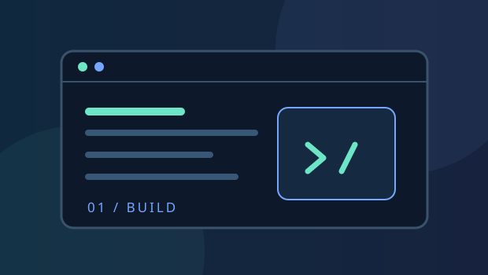
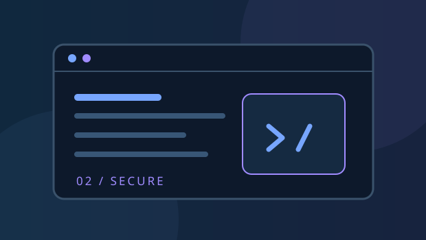

Front-end
HTML5, CSS3, JavaScript e interfaces responsivas.
Disponível para novos desafios
Olá! Sou Helena, estudante de tecnologia e desenvolvedora em formação. Gosto de transformar ideias em projetos úteis, bonitos e funcionais.
01 / SOBRE MIM
Tenho interesse em desenvolvimento de interfaces, lógica de programação, automação e segurança da informação. Procuro aprender criando projetos práticos, testando ideias e melhorando a experiência de quem usa cada solução.
Este portfólio também demonstra um processo de entrega com integração contínua, verificações de qualidade e publicação automática via GitHub Actions.
02 / O QUE EU UTILIZO
HTML5, CSS3, JavaScript e interfaces responsivas.
Python, C, lógica e resolução de problemas.
Fundamentos de SOC, análise de incidentes e boas práticas.
Git, GitHub, automação de testes e pipelines CI/CD.
03 / TRABALHOS

WEB • EDUCAÇÃO
Jogo educacional investigativo que combina tecnologia, lógica e resolução de desafios.
HTML • CSS • JavaScript
GAMES • SEGURANÇA
Conceito de jogo em Godot com foco em cibersegurança e decisões durante crises.
Godot • GDScript • Pixel ArtAUTOMAÇÃO • DEVOPS
Validações automáticas em Pull Requests e publicação do portfólio com GitHub Pages.
GitHub Actions • Node.js04 / CONEXÕES
Conheça meu trabalho e acompanhe os próximos projetos.